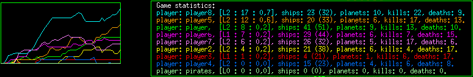

| At the starting point the player
owns a ship landed in a planet. Your objective is
conquer all space.
Your first actions must be buy new ships and send them
to explore the Universe to find new planets.
Pressing the "o" key an orders menu is
displayed in the bottom of the main window. You can
buy towers to extract resources and get more gold,
explorers and fighters to conquer planets.
After selecting an order press "ENTER" to
execute it.
Press "ESC" to cancel it.
Pressing the "a" key you can control the
spaceship manually. Press "i" key to return
to automatic mode.
In manual mode you can control every ship independly
with the keyboard. To turn the ship use the left and
right arrow keys. To accelerate, the up key
arrow. SPACE to fire. "1", "2",
"3", to change armor.
A map of the known Universe is shown pressing the
"m" key.
Ships:
There are four types of ships: Explorer, Fighter, Defense Tower and Queen spaceship.
 |
Explorer | Useful to explore
the space. It has a low gas cost and poor
arms. It has a large radar. |
|
Fighter |
Better arms and faster than the explorer. |
|
Defense Tower |
Only can stay on planets. It has two
objectives: the defense of the planet and the
extraction of minerals. |
 |
Queen spaceship |
In queen mode game, if you lost it, you lost
the game. |
|
Astronaut |
All FIGHTERS of level 1 or superior come
equipped with a survival pod. When a ship is
destroyed the pilot is ejected. This pilot will
be able to survive in the space during certain
time (around 5 min.). He can be rescued by
another ship and returned to ground where he
will be able to acquire a new ship. The level of
the new ship will be the same as the old
one. |
Other objects:
|
Planets | You must conquer
them. |
|
Asteroids |
Around all space. Destroying them, you get
gold. |
Orders menu: It is possible to give orders to
ships: pressing the "o" key an orders menu
is displayed in the bottom of the main window. When
you enter in order mode you only can give an
order. You get out of order mode in one of the next
ways:
- Executing the order. Pressing "ENTER".
- Canceling the order. Pressing "ESC".
- Changing of ship. Pressing: "TAB",
"PageUp", "PageDown" or
"Home".
Several options are available:
| GOTO |
You can send your ships to different targets in many ways:
- Giving the target id. The target id can be
a planet or another ship. Several ships can
fly together if all of them have the same
target id. Example: GOTO 23. Will go the
object labeled with the number 23. It can be
a planet or another ship.
- Giving the sector coordinates. Blank or
coma separated. Example: GOTO 23,12
- Goto the nearest planet with n. Example:
GOTO n. Will go to the nearest ally or known
free planet.
- Instead of the spaceship id you can write
F1, F2, etc. for the selected marked ships
(see
selecting a ship). Example: GOTO F3.
- In map view, a right mouse click will
send the selected ships to the mouse position.
|
| EXPLORE |
Your ship will take off and will explore the
space. Be aware if your ship run out of fuel or
it is very far from home. |
| SELECT |
You can select a ship or a planet typing its
id. |
| STOP |
Your ship will stop. Inside a planet, it will
land first. Once stopped, it will only shoot, will
not accelerate. |
RETREAT |
Your ship will go directly to the nearest
empty or allied planet. Without attacking the
enemy. Once landed it will change the order to
GOTO nearest planet. |
| TAKE OFF |
To take off. (not so useful by now) |
| BUY |
You can buy any available ship, if you have
enough gold. The ship must be landed.
If you are not in a planet of your own, you can't
buy Towers.
The Pilots only can buy Figthers. |
| UPGRADE |
You can upgrade your ship until one level
lower than the greatest level reached. The ship
must be landed. |
| REPEAT |
Repeat the last order given. |
| WRITE |
Write a message to the other players. |
| SELL |
To sell a ship. You'll get the half of its
original value. The ship must be landed. |
Manual and automatic mode:
You can change between both modes, for all your ships,
pressing the "a" key for manual mode and
pressing the "i" key to back to the
automatic mode.
Only one ship can be change between these modes at a
time. Inside a planet this special ship is drawn with
white color. In the free space this ship is shown with
the radar centred on it.
In manual mode you can control every ship independly
with the keyboard. To turn the ship use the left and right
arrow keys. To accelerate, the up key arrow. SPACE to
fire. 1,2,3 to change armor.
In automatic mode, the ship follows your orders,
except in the following cases:
- If an enemy ship is near then attack.
- If it is close to asteroids, goes to them.
- If it has few fuel or no ammunition goes to the
nearest ally planet.
- When landed, doesn't take off until it reaches a
minimum amount of fuel and ammunition.
When the exceptions finish, it will continue with the given
order.
Especial orders:
- STOP:
If the ship is in outer space: stop, doesn't accelerate but can fire.
Inner a planet: first land and stay on ground, doesn't take
off but can fire. Never take off.
The order STOP is applied except in the next case:
- if the ship has low ammunition, low fuel or is very
damaged it goes to the nearest ally planet.
- RETREAT:
The ship will go to the nearest ally planet without
attack any enemy or asteroid.
Selecting a ship:
There several ways of selecting a ship:
- Pressing the "Tab" key you can change
among all your ships. "Ctrl-Tab" inverts
the order.
- Pressing "PageDown" selects a ship in
the next planet. "PageUp" in the
previous one.
- Pressing "Home" selects the first
spaceship in outer space.
- Using the order command SELECT and introducing
the ship ID.
- With mouse in map view or inner a planet. Left click
selects the nearest ship to mouse pointer.
- There are four rapid access key to select ships:
F1, F2, F3 and F4. If you press Ctrl-F1 the
actual selected ship is assigned to the key F1,
etc...
Selecting multiple ships:
In the map view or inner a planet, you can select
various ships with the mouse. The next order will
affect to all of them. Simply, click with the left
mouse button and, without release it, drag and select
the region you want. All ships into that region will
be selected.
You can select multiple individual ships keeping the
"ctrl" key pressed.
If you select a planet in the map view, all spaceships
inside the planet will be selected.
The color of the selected ships will be grey.
Weapons:
The ships have three types of weapons.
| Shots | All the ships. |
| Missile | Only fighters. |
| Laser | Only fighters. |
Depending of the level of the ship some weapons are
available or not. At level 0 only the shots are
available. The fighter have two more weapons: missile
at level 1 and laser at level 2. All the ships
increase their weapons strength and their shields when
pass to the next level.
In manual mode you can
change among the weapons pressing 1, 2 or 3 keys (If
the weapon is available or it has ammunition).
Window and ship centered view modes.
Pressing "Ctrl-n" is possible to change between two
view modes: centered at the ship or centered at the
window.
Game modes:
There are three game modes: Cooperative, Deathmatch and Queen mode.
- Cooperative.
You can select from the menu two
options:
- Cooperative mode. In this case all human
players fight in the same team.
- Computer cooperative mode. All computer
players fight in the same team.
- Deathmatch.
It is the default mode. All
the players fight against all.
- Queen mode.
An especial ship play the same role that
the King in chess. If you lost it, all
your ships are destroyed. GAME OVER.
It is possible select these options from the command
line: -cooperative, -compcooperative, -queen.
Navigate information:
 |
In normal navigation mode, in the left of the
main window you can see the next information:
- Three status bar: energy,
state and experience of the current selected
ship. The number next to STATE is the
shield. A shield of 0,3 means that the ship
receive the 70% of the damage. The maximum
value is 0,9.
- Information about the current selected ship as
the type of ship. Its ID. Its mode: Automatic
(A) or Manual (M) and its level.
Ammunition of
the current selected weapon (damage) and weapon
selected.
In witch sector it is, velocity,
number of enemies killed, actual order, distance
and time remaining to reach the target.
- Global information about the player: gold,
number of planets, number of ships, number
of enemies defeat, number of ships lost and
points.
- Information about the planet in which the
ship it is. Planet ID, gold remaining,
resource and mass. The resource indicate the
number of towers that can be build in the
planet. More towers can still defend the
planet but dont extract more gold.
|
Radar:

|
In the free space the radar info is shown as a red
circle centered at the spaceship. The different objects
as represented as follows: big dots for planets, with
the color of the player that own such planet. White
dots for the own ships, blue dots the
spaceships of the same team and red dots for the enemy
spaceships.
The survival pods as flashing crosses.
|
Map:
Pressing the "m" key you enter in the map
view. All your ships and all known planets are
shown.
Its possible to zoom in and out with
"z" and "Z".
The cursor keys allows you to move along the map.
<space> centers the map in the actual ship.
Over the mouse pointer its displayed the space coordinates and the
distance in sectors from the selected ship to the mouse
pointer.
|
|
The white color is reserved for empty planets and
asteroids. The different objects has the color of
their player. The planets are represented by big
dots, the spaceships by crosses, the asteroids by
white crosses, the astronauts in free space by
flashing crosses. The spaceships and planets has
also their id number.
The explored universe is marked with dark red
crosses. The universe has a limit; beyond that
there are no marks.
|
Game messages:

|
All information about the game as: ships in
danger, asteroids found, planets discovered,
etc. appear in the left down corner of the main
window.
If you run SpaceZero from a terminal the same
information is displayed on it. All the given
orders accepted are also show there.
|
Ships and planets info:
Pressing the "f5" key a sort information of all your
ships and planets is displayed.
 |
In the left of the main window you can
see the next information about your ships:
The first line shows the total number
of ships and the number of each type.
There is a line for every ship with the next information:
- The type of the ship: F (fighter), T
(tower), E (explorer), Q (queen) , A (astronaut)
or M (if it is in manual mode).
- Its level.
- Its ID.
- The actual order. EXP means exploring. GT:14
that is going to obj 14.
- In which planet is the ship. IN:0 means in outer space.
- In the case that the ship state or energy
are not at 100% shows its value.
- In white color its shown the actual
selected ships. Red and yellow colors are for
ships in danger (cause of low gas or damaged).
In blue the allied ships.
|
|
In the right side of the screen is shown a planet
list with the next information: planet id, gold
remaining and the number of ships in it.
The number of ships in outer space is showed in the second line.
|
Pressing the "f6" key a sort game
statistics are displayed with the next information:

Player name, number of ships, (total number of ships
created), planets, enemy ships destroyed and number of
lost ships.
Experience and Levels:
Ships experience increase during the game. When a ship
reaches a maximun it can upgrade to the next
level. This way it can get new arms, better defense
and more power. If a ship is upgraded, its state and
energy is restored to the maximun value.
The ships can get experience in any of the following ways:
In combat, when a ship is reached by a shot,
destroying an enemy ship and conquering an enemy or
empty planet.
When a ship conquer a planet there is a probability to
received info from enemy (the coordinates of some
planet). This probability increase with ship's level.
Exploring, Discovering new planets.
Training: all ships with a level equal or
superior to 3 can train other ships. For training,
both ships must be in same planet and the pupil must
be landed. The master also must be two levels
superior.
Upgrade: you can upgrade a ship (it cost
gold). You can only upgrade until one level below the
higher level reached for one of your ships.
Gold:
There are several ways to obtain gold:
-Every tower in each planet gets gold until the planet
resources are finished. In this case they can still
obtain a little amount of gold. Increasing the number
of towers in every planet increased the amount of gold
obtained. Depending on the planet mass, there is a
limit in the number of towers in the same planet that
can obtain gold. For the big ones, this limit can be
four or five towers. For the little ones, three.
-For each planet, every player gets a fix amount of
gold.
-Destroying asteroids is another way to obtain gold.
-All the ships destroyed inside a planet increase the
planet resources.
-And the last way: selling ships .
And there are also several ways to lost it:
-All the ships, except the towers, have a cost. This
constant cost is increased when a ship is upgraded.
-All the ammunition cost gold.
-Repair and refuel a ship cost gold.
-Buying, upgrading ships.
Size of the Universe:
Its possible to choose the size of the Universe, the
number of galaxies and the total number of
planets. Use the command line options: -l, -g and
-n. The units of the universe size are pixels.
The distance is indicated in sectors (1 sector is 1410
pixels)
Net gaming:
For two players net game: one must be configured as
the server and the other one as the client. Use the
next command line options:
$ space -s -ip ipnumber
for the server, and
$ space -c -ip ipnumber
for the client.
where ipnumber is the IP number of the server.
SpaceZero use the port 50100 by default. You can use
another port adding -port portnumber in the command
line. SpaceZero also use the next port, by default
50101.
Loading and saving games:
<Ctrl>-s and <Ctrl>-l will save and load a game. Only two
games can be saved: one for single games and another one for a net
games.
In a net game only the server can save and load games.
Pausing a game:
<Ctrl>-p will paused the game.
Quitting a game:
<Ctrl>-q will quit the game.
Game Over:
If you lost all your ships the game is over.
In queen mode game, if you lost the Queen Spaceship,
you lost the game.
When game is over, pressing the "f7" and
"f8" keys you can observe the other players
(in single games and in the server side).
Tips:
-Try to conquer all the inexplore planets as fast as
you can.
-Don't buy more than two or three towers by planet
unless you need to defend the planet.
-Watch out your explorers, don't let them go too far.
-You can form groups of ships ordering to some of
them GOTO another ship. All of them will go where this
last one go.
-Save some gold. It would be useful if you are under attack.
-Use the ships of level three or superior to upgrade
the rest, especially the towers.
|